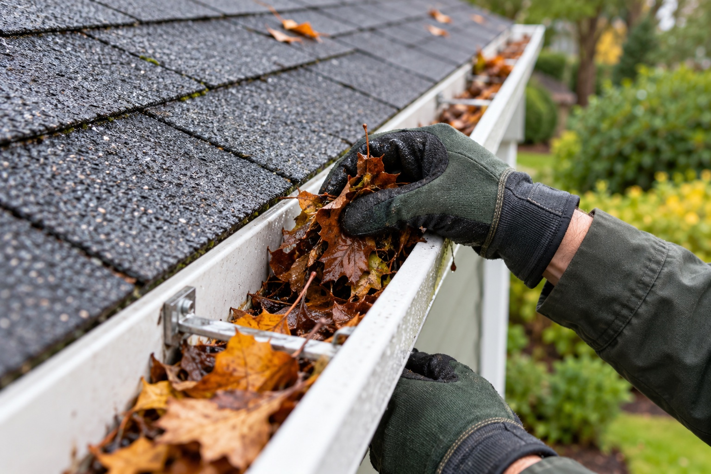

Clear the gutters
Remove leaves, needles, and built-up debris.
Your neighborhood gutter crew · Salem, OR
We’re two friends helping Salem neighbors check gutter cleaning off their to-do lists.
We’ll handle the leaves.
You get your weekend back.
A few quick questions. No pressure. No payment.
Small crew. Real people. Say hello

Less buildup. Better flow.NOT FANCY. JUST HELPFUL.
Leaves and pine needles pile up fast. Here’s what we can help with.
Remove leaves, needles, and built-up debris.
Look for blockages so water can keep moving.
Bag the gutter debris and leave things neat.
We’re a young, two-person team starting our own gutter cleaning service. No big company. No complicated sales pitch. Just two friends ready to get to work.
We want to build something we’re proud of, one home at a time. That means being clear about the price, treating your place with care, and keeping you in the loop.
Thanks for giving a small local crew a shot.
Tell us about your guttersLET’S KEEP IT EASY
Share your ZIP code and what your gutters need. It’s a short form. Promise.
We’ll review the details and give you a quote before you commit to anything.
If it’s a good fit, we’ll agree on a time and get your gutters taken care of.
WONDERING ABOUT SOMETHING?
Here are a few quick answers.
You can always ask us more in your quote request.
It depends on your home’s height, gutter length, debris, and access. Tell us a little about your place and we’ll give you a personal quote. You’ll know the price before any work is agreed.
We’re focusing on Salem, Oregon. Add your ZIP code to the form so we can confirm availability. Just outside Salem? You’re welcome to ask.
We’ll work that out with you before scheduling. Access, gates, and pets can make a difference, so let us know about anything we should plan around.
Mention it in your request. Guards can affect the work involved. We focus on cleaning, so a damaged or leaking gutter may need a separate repair.
Nope. It’s just a free quote request. No payment, no automatic booking, and no pressure to go ahead.
A small local crew. One less chore for you.
Get my free quote Salem, Oregon · No pressure, ever.